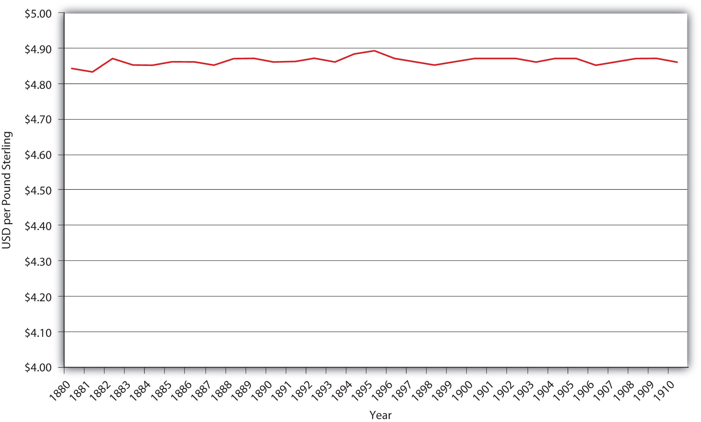
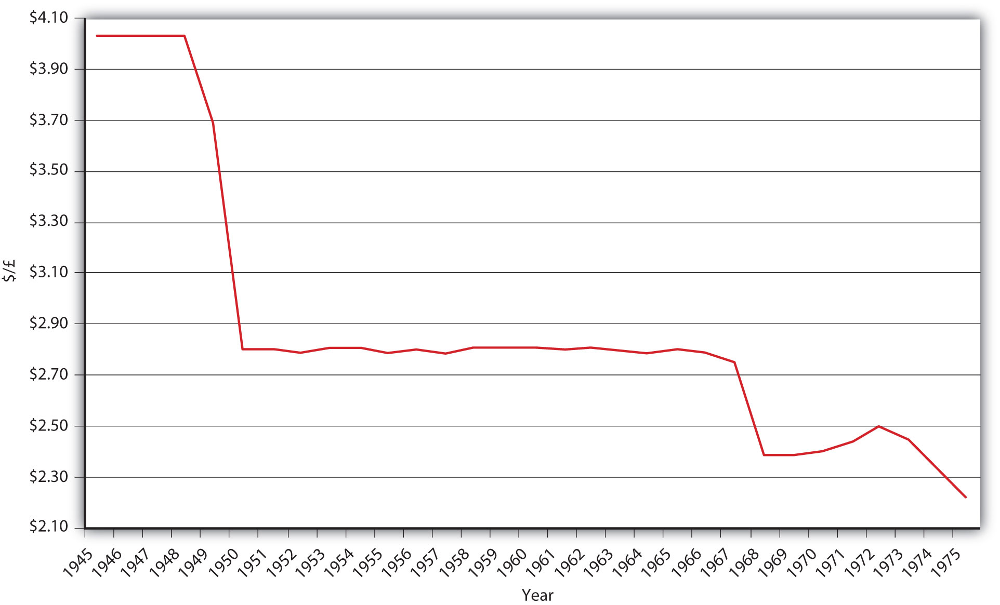

Under the gold standard, nations defined their respective domestic units of account in terms of so much gold (by weight and fineness or purity) and allowed gold and international checks (known as bills of exchange) to flow between nations unfettered. Thanks to arbitrageurs, the spot exchange rate, the market price of bills of exchange, could not stray very far from the exchange rate implied by the definition of each nation’s unit of account. For example, the United States and Great Britain defined their units of account roughly as follows: 1 oz. gold = $20.00; 1 oz. gold = £4. Thus, the implied exchange rate was roughly $5 = £1 (or £.20 = $1). It was not costless to send gold across the Atlantic, so Americans who had payments to make in Britain were willing to buy sterling-denominated bills of exchange for something more than $5 per pound and Americans who owned sterling bills would accept something less than $5 per pound, as the supply and demand conditions in the sterling bills market dictated. If the dollar depreciated too far, however, people would stop buying bills of exchange and would ship gold to Britain instead. That would decrease the U.S. money supply and appreciate the dollar. If the dollar appreciated too much, people would stop selling bills of exchange and would order gold shipped from Britain instead. That increased the U.S. money supply and depreciated the dollar. The GS system was self-equilibrating, functioning without government intervention (after their initial definition of the domestic unit of account).
Figure 19.3 Dollar-sterling exchange during the classical gold standard
As noted in Figure 19.2 "Strengths and weaknesses of international monetary regimes" and shown in Figure 19.3 "Dollar-sterling exchange during the classical gold standard", the great strength of the GS was exchange rate stability. One weakness of the system was that the United States had so little control of its domestic monetary policy that it did not need, or indeed have, a central bank. Other GS countries, too, suffered from their inability to adjust to domestic shocks. Another weakness of the GS was the annoying fact that gold supplies were rarely in synch with the world economy, sometimes lagging it, thereby causing deflation, and sometimes exceeding it, hence inducing inflation.
Why did the United States find it prudent to have a central bank (the B.U.S. [1791–1811] and the S.B.U.S. [1816–1836]) during the late eighteenth and early nineteenth centuries, when it was on a specie standard, but not later in the nineteenth century? (Hint: Transatlantic transportation technology improved dramatically beginning in the 1810s.)
As discussed in earlier chapters, the B.U.S. and S.B.U.S. had some control over the domestic money supply by regulating commercial bank reserves via the alacrity of its note and deposit redemption policy. Although the United States was on a de facto specie standard (legally bimetallic but de facto silver, then gold) at the time, the exchange rate bands were quite wide because transportation costs (insurance, freight, interest lost in transit) were so large compared to later in the century that the U.S. monetary regime was more akin to a modern managed float. In other words, the central bank had discretion to change the money supply and exchange rates within the wide band that the costly state of technology created.
The Bretton Woods System adopted by the first world countries in the final stages of World War II was designed to overcome the flaws of the GS while maintaining the stability of fixed exchange rates. By making the dollar the free world’s reserve currency (basically substituting USD for gold), it ensured a more elastic supply of international reserves and also allowed the United States to earn seigniorage to help offset the costs it incurred fighting World War II, the Korean War, and the Cold War. The U.S. government promised to convert USD into gold at a fixed rate ($35 per oz.), essentially rendering the United States the banker to more than half of the world’s economy. The other countries in the system maintained fixed exchange rates with the dollar and allowed for domestic monetary policy discretion, so the BWS had to restrict international capital flows, which it did via taxes and restrictions on international financial instrument transactions.For additional details, see Christopher Neely, “An Introduction to Capital Controls,” Federal Reserve Bank of St. Louis Review (Nov./Dec. 1999): 13–30. research.stlouisfed.org/publications/review/99/11/9911cn.pdf Little wonder that the period after World War II witnessed a massive shrinkage of the international financial system.
Under the BWS, if a country could no longer defend its fixed rate with the dollar, it was allowed to devalue its currency, or in other words, to set a newer, weaker exchange rate. As Figure 19.4 "Dollar–sterling exchange under BWS" reveals, Great Britain devalued several times, as did other members of the BWS. But what ultimately destroyed the system was the fact that the banker, the United States, kept issuing more USD without increasing its reserve of gold. The international equivalent of a bank run ensued because major countries, led by France, exchanged their USD for gold. Attempts to maintain the BWS in the early 1970s failed. Thereafter, Europe created its own fixed exchange rate system called the exchange rate mechanism (ERM), with the German mark as the reserve currency. That system morphed into the European currency union and adopted a common currency called the euro.
Figure 19.4 Dollar–sterling exchange under BWS
Most countries today allow their currencies to float freely or employ a managed float strategy. With international capital mobility restored in many places after the demise of the BWS, the international financial system has waxed ever stronger since the early 1970s.